Токио
Наша база на 5 ночей • 20–25 мая 2026
🏠 НАШ ДОМ В ТОКИО
Ryan inn 99
📍 Адрес: 2-chōme-8 Nakajūjō, Kita City, Tokyo 114-0032, Япония
📅 Заезд: 20 мая с 15:00 до 22:00 | Выезд: 25 мая до 10:00
🚆🗼 День 10 · 20 мая (ср) — Приезд из Фудзи, Tokyo Skytree, Асакуса

Самая высокая башня Японии (634 м), обзорная площадка Tembo Deck.
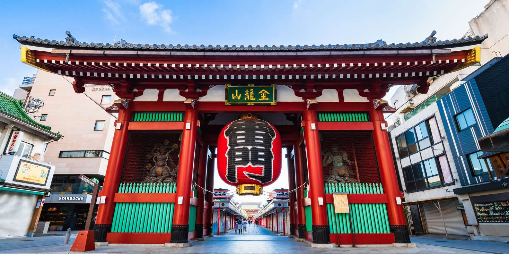
Старейший храм Токио с гигантским фонарём и торговой улицей Накамисэ-дори.
⚡🌃 День 11 · 21 мая (чт) — Акихабара + Синдзюку
Утро: Дом → Акихабара
День: Акихабара → Синдзюку
Вечер: Синдзюку → Дом
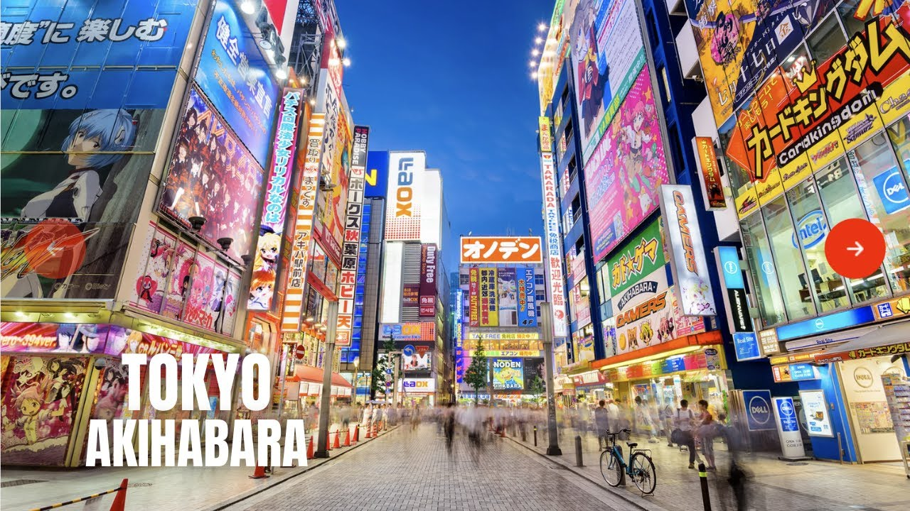
Район электроники, аниме и манги. Магазины открыты до 20:00–21:00.
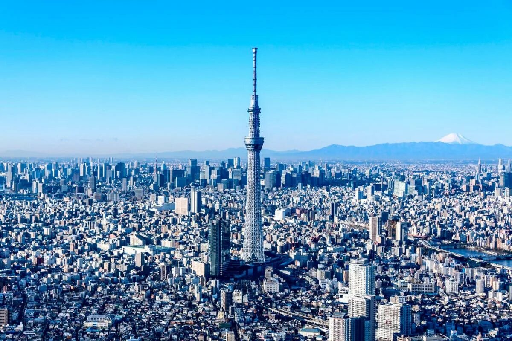
Небоскрёбы, Cross Shinjuku Vision (3D-кот), Godzilla Road (голова Годзиллы), вечерняя прогулка по Golden Gai.
🏯💧🎢 День 12 · 22 мая (пт) — Храм Мэйдзи, TeamLab, Disney (А) / шопинг (Б), Shibuya Sky
Утро: Дом → Храм Мэйдзи
День: Храм Мэйдзи → TeamLab Planets
Вечер: TeamLab → Disney (группа А) / Шопинг (группа Б) → Shibuya Sky (все)
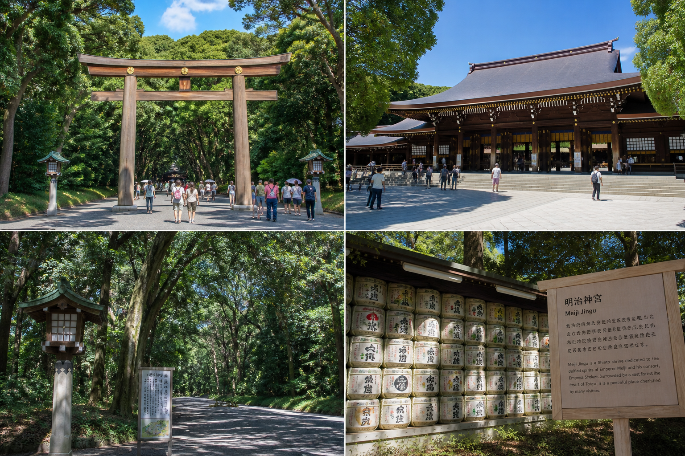
Огромный синтоистский храм в зелёном парке Ёёги. Главное место для традиционной атмосферы в центре Токио. Прогулка 1.5–2 часа.
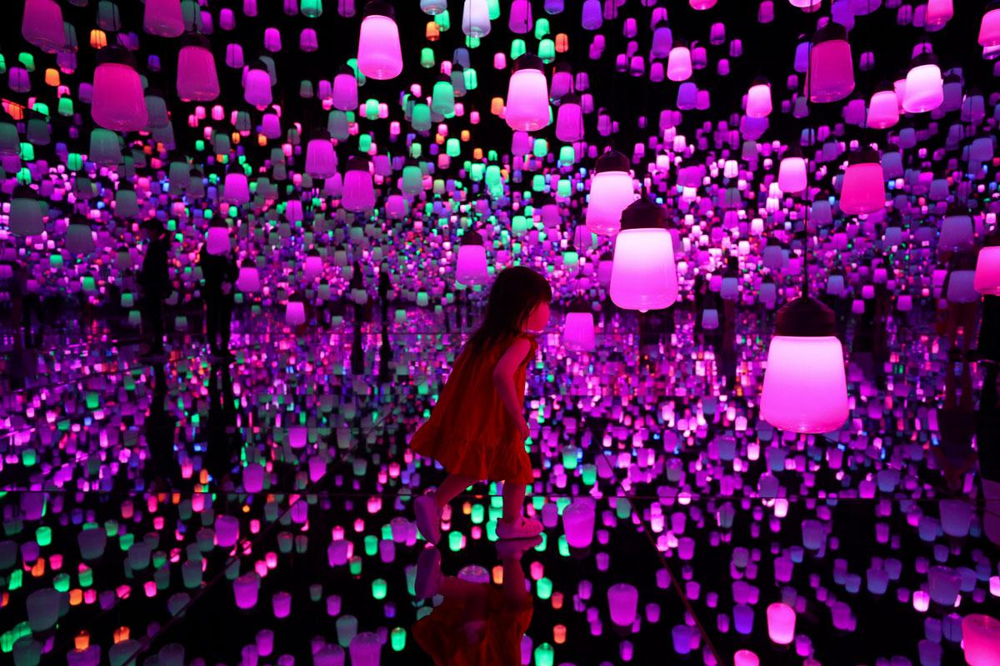
Цифровой музей с иммерсивными инсталляциями. Билеты куплены на 13:30.
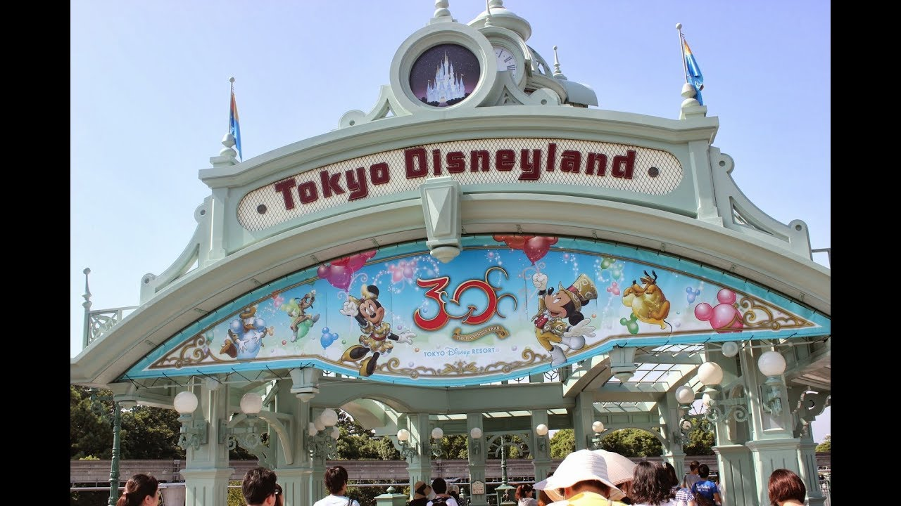
Один из самых посещаемых парков развлечений в мире.
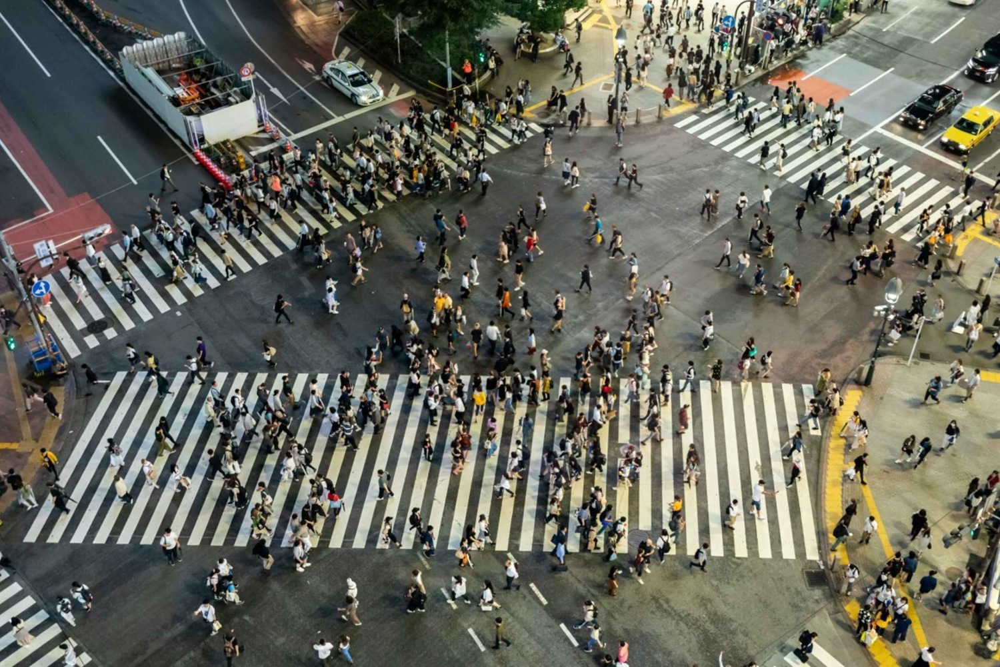
Сибуя, Харадзюку, Омотесандо — лучшие места для модного шопинга.
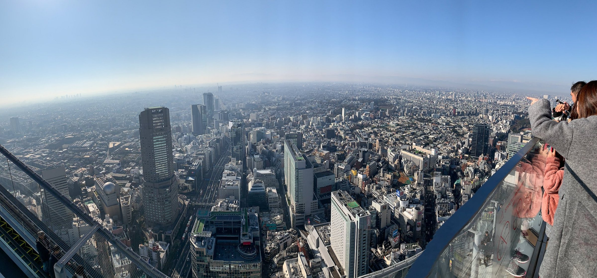
Открытая смотровая площадка на крыше Shibuya Scramble Square. Ночной Токио с высоты 229 м.
🏯 День 13 · 23 мая (сб) — Камакура (Великий Будда, Хасэ-дэра) + остров Эносима
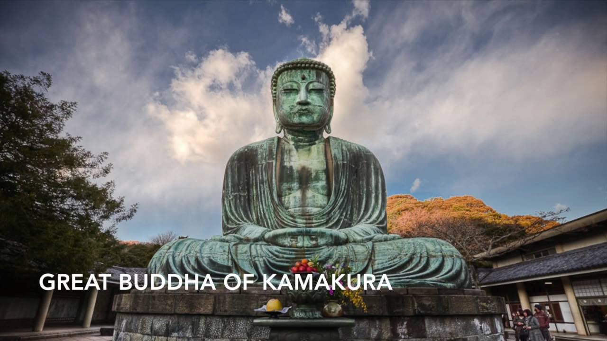
13-метровая бронзовая статуя, символ Камакуры.
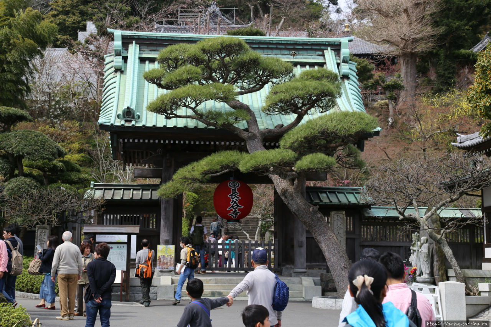
Древний храм с видом на океан, садами и статуями Дзидзо.
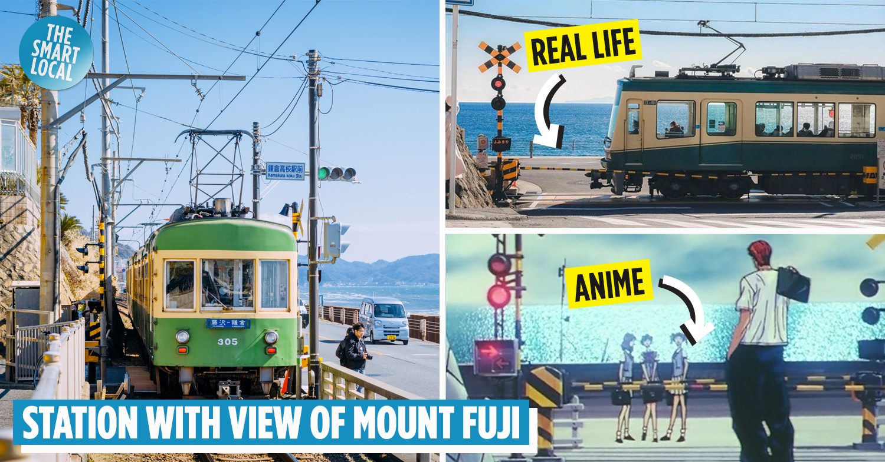
Культовое место из аниме Slam Dunk. Станция Kamakura Koko-mae.
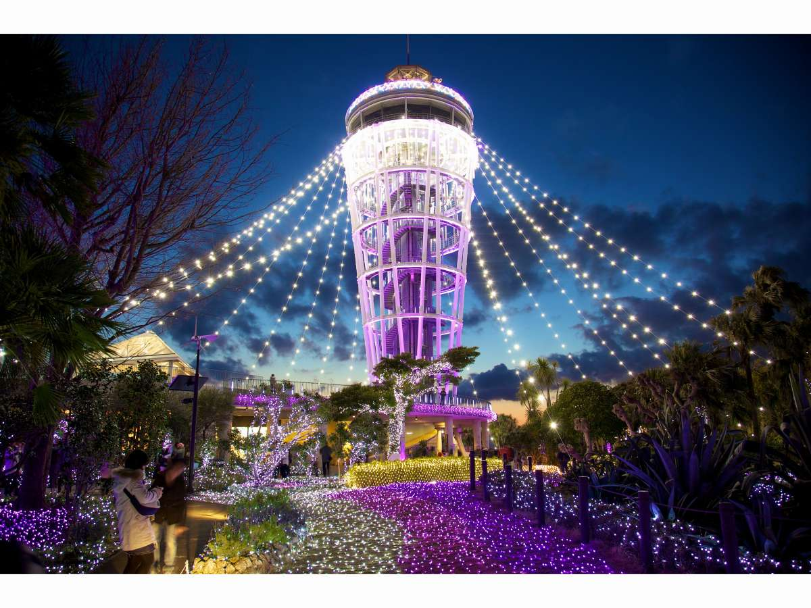
Живописный остров с храмами, маяком и пещерами.
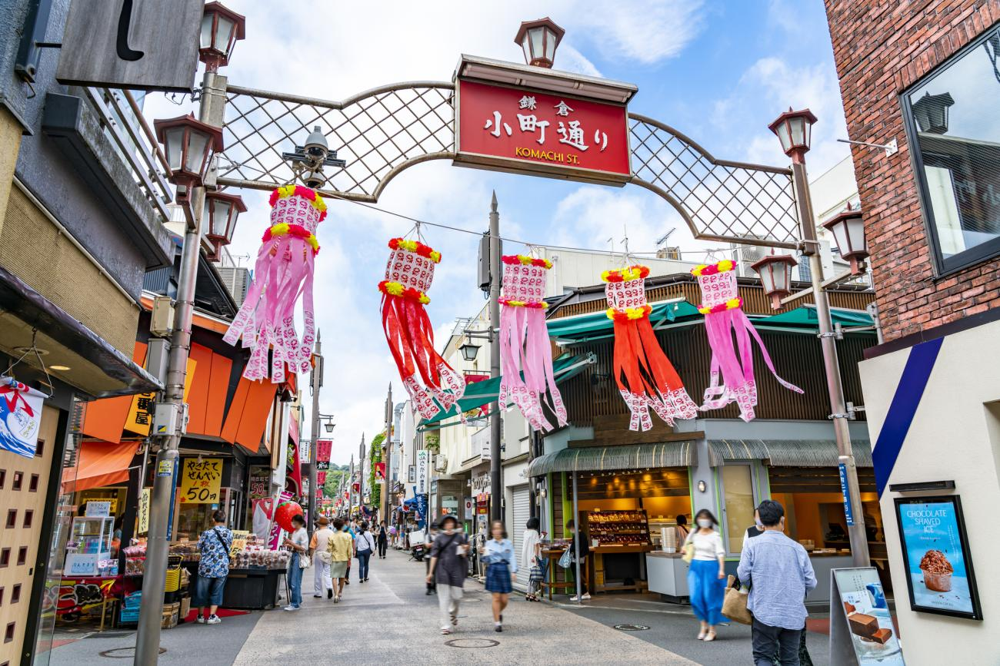
Shirasu-don (миска с молодыми сардинами) – специалитет Эносимы. Также Komachi Street в Камакуре.
🗓️ День 14 · 24 мая (вс) — Свободный день: каждый выбирает занятие по душе
Ниже 6 отличных вариантов. Можно выбрать один или скомбинировать несколько.
🏝️ 1. Одайба — остров будущего
Футуристический район на насыпном острове: огромный Гандам, статуя Свободы, колесо обозрения, торговые центры и пляж с видом на Радужный мост.
🎨 2. Роппонги — искусство и музеи
Музей Mori Art Museum с панорамной смотровой Tokyo City View, комплекс Tokyo Midtown, Национальный художественный центр.
🛍️ 3. Сибуя / Харадзюку — модный шопинг
Shibuya Crossing, Takeshita-dori, Omotesando — токийские Елисейские поля. Идеально для шопинга и уличной культуры.
🏛️ 4. Уэно — музеи, парк и зоопарк
Токийский национальный музей, Национальный музей западного искусства, зоопарк с пандами.
🍜 5. Кафе и тематические рестораны
Робот-ресторан, совиное кафе, ежовое кафе, тематический ресторан в стиле тюрьмы. Маршрут по самым необычным заведениям.
⚓ 6. Йокогама — портовый город
30–40 минут на поезде: Минато Мирай, музей рамэн, красные кирпичные склады, китайский квартал.
✈️ День 15 · 25 мая (пн) — Выезд и перелёт в Шанхай
Выезд из Ryan inn до 10:00
📊 Сводка расходов (Токио)
| День | Маршрут | Йены (JPY) | Рубли (≈) |
|---|---|---|---|
| 20 мая | Приезд из Фудзи + Skytree + Асакуса | ≈¥5610 | |
| 21 мая | Акихабара + Синдзюку | ¥730 | |
| 22 мая | Мэйдзи + TeamLab + Shibuya Sky (базовый) | ¥5260 | |
| 22 мая (А) | Доп. Disney | +¥8400–9900 | |
| 23 мая | Камакура + Эносима | ¥4500–7000 | |
| 24 мая | Свободный день | ¥2000–5000 | |
| ИТОГО (примерно, без Disney): | |||